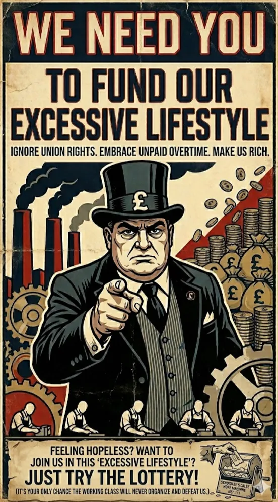
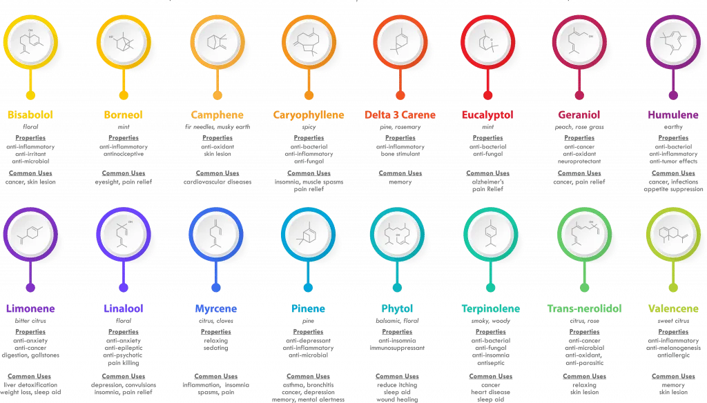
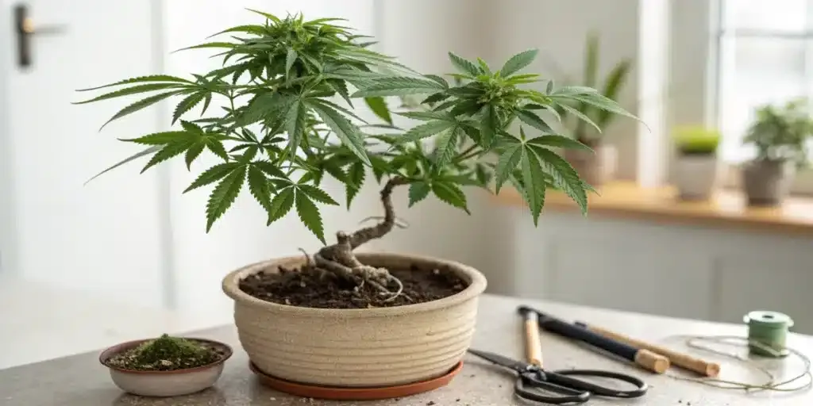
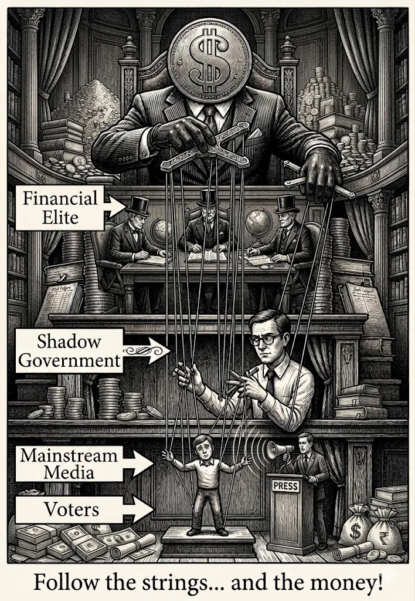
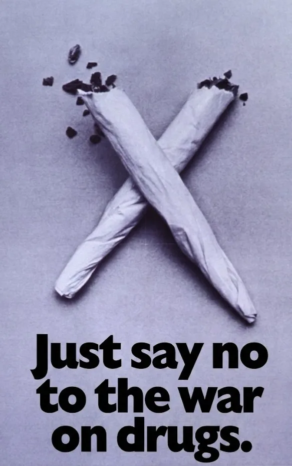

Legalize it.
Wag1, This one's a good one, so get comfortable and suspend your disbelief if you are a sceptic, as I have a point to make.
A friend of mine recently got into some shit with their neighbor. Not over noise, not over parking, not over anything that actually disrupts anyone's life in a meaningful way. The neighbor started banging on their door, then followed it up with a note. The note said the smell of weed was upsetting them. And their "scared" kids.
Their scared kids...
I want you to sit with that for a second. Someone smelled a plant through a wall, decided their children were in danger, and escalated to physical confrontation followed by a written complaint. Over a smell. That's where we are. And this is treated as completely normal behavior.
We live in a culture that is utterly obsessed with artificial odors. We buy chemical plug-ins that mimic a "cool arctic breeze," spray aerosol cans to make our bathrooms smell like fake lavender, and hang neon cardboard trees from our rearview mirrors. We don't blink an eye at breathing in a cocktail of synthetic, petroleum-based fragrances. Yet, the moment a draft of natural cannabis smoke wafts through the air, people absolutely lose their minds.
And it goes way deeper than just a wrinkling of the nose. Think about the sheer psychological conditioning required to smell a plant growing out of the dirt, and let it offend you so deeply that your immediate response is to try and get another human being locked in a cage.
Dwell on that for a second. You catch a whiff of an organic combination of terpenes, the exact same compounds that give pine trees their freshness, lemons their zip, and mangoes their sweetness, and your brain instantly decides that someone else deserves to have their freedom stripped away, their career ruined, and their life derailed by the prison system.
How did we get here? It isn't biology. It is decades of highly successful, weaponized social engineering designed to keep our critical thinking on absolute autopilot.
The Illusion of Incompetence
A massive portion of an entire generation grew up assuming that by the year 2020, this debate would be completely over. We looked at a relatively benign plant, looked at the sheer logic of the situation, and assumed eventual legalization was a mathematical certainty that required no input. We thought the people running the government were just out of touch, old-fashioned, or fundamentally incompetent. We were incredibly naive.
It wasn't stupidity. It was, and is, a highly sophisticated, deeply insidious system of extraction.
The government's hysterical propaganda campaign wasn't a well-intentioned mistake. When the state spends decades telling young people a plant will instantly ruin their lives, knowing full well those same kids will eventually grow up and see the truth for themselves, they aren't being incompetent. They are laying the groundwork for a trap.
The hypocrisy sparks curiosity. The curiosity drives individuals into an illicit, unregulated market. And that illicit market provides the exact statistical justification the state needs to keep funneling billions of your tax pounds into bloated police budgets and private mega-prisons. We thought it was a coincidence that the laws made no sense. It wasn't.
The system isn't broken; it is operating exactly as designed.
The Manufactured Distraction (Horizontal Hostility)
Here is the most vital reality of this entire debate: my friend and their neighbour are actually on the exact same team. They just don't know it yet.
The friction between citizens over a botanical scent is not a natural occurrence; it is a highly engineered illusion. The state and the corporate entities currently extracting massive amounts of wealth from the public absolutely rely on this exact conflict. When a system is designed to siphon resources upward, its greatest threat is a unified population. To prevent the public from looking up at the real root causes of their economic and social instability, the system manufactures a fake cultural war to force them to look sideways.

When a neighbor becomes enraged by a passing scent and starts banging on doors, they genuinely believe they are protecting their community. In reality, they are acting as an unpaid, outsourced security guard for a corporate state that is actively making their own life more expensive and highly taxed. The anger is valid, but the targeting is mathematically incorrect. The government needs you to stay furious at the person next door, because as long as you are fighting over a plant, you will never look closely at the billions of pounds being funneled out of your taxes to fund their private carceral state.
We are arguing over a breeze while the system empties both of our pockets.
The Fragrance Hypocrisy and The Corporate Hall Pass
The absolute absurdity of this conditioned mindset becomes blindingly obvious when you look at what society does allow to bombard our senses.
If someone drenches themselves in a ridiculous amount of high-end commercial perfume and walks into a crowded space, nobody calls the police. Everyone else is just expected to sit there and choke on it, even though the fragrance industry exploits legal "trade secret" loopholes to hide what's actually in their bottles. You aren't breathing in nature. You are inhaling phthalates and crude oil derivatives. Yet, society categories this invasive chemical intrusion as "luxury" simply because it comes packaged in a sleek glass bottle backed by a multi-million-pound marketing campaign.
The public has been systematically trained to tolerate massive, toxic chemical odors as long as a corporation or a municipal entity is making money from it.
Scent Source
What You Are Actually Inhaling
Social Classification
Public Reaction
Commercial Perfumes
Phthalates, synthetic musks, crude oil derivatives
Luxury / Hygiene
Socially protected, expected to tolerate
Roadway Asphalt
Polycyclic aromatic hydrocarbons, heavy particulates
Industrial Utility
Tolerated without question as "infrastructure"
Two-Stroke Lawnmowers
Unburnt petrol, benzene, carbon monoxide
Suburban Conformity
Accepted as a normal weekend activity
Cannabis Smoke
Pure botanical terpenes (Myrcene, Limonene, Pinene)
Counterculture / Deviancy
Criminalised, triggers state violence
A council road crew can fill your entire home with toxic, hot bitumen fumes while repaving a street, and you accept it. A neighbor can blast unburnt fossil fuels across your garden fence with a leaf blower on a Sunday morning, and you say nothing because it's tied to middle-class property maintenance.
But if an individual burns a natural, prehistoric herb on their own balcony, it's treated as a moral failing worthy of a prison sentence.
Weaponizing Scent: The War on Drugs and the Panopticon
To understand how the state successfully turned neighbors into enemies, turned regular people into the kind of person who leaves passive-aggressive notes about their scared kids, you have to look at the blueprints of the War on Drugs. When these policies were drawn up, the goal was never public health; it was the deliberate destabilization of specific communities and anti-establishment countercultures.
But a government can't put a police officer on every single street corner. To truly control a population, you have to build a Panopticon, a psychological prison where the citizens become the guards.
By running decades of aggressive propaganda, the state successfully deputized the public. They trained ordinary people to look at their neighbors not as community members, but as targets. When someone calls the authorities over a botanical odor, they are actively executing a pre-programmed state script.
And on the "scared kids" thing, let's look at what the science actually says. Lungs absorb active cannabinoids on inhalation. What gets exhaled in an open environment is almost entirely harmless particulate and terpenes. You are not getting a contact high through a wall.

"Some of the common terpenes found in cannabis" The fear isn't based on medical reality; it's a phantom symptom of the propaganda machine. If anything, they should be embracing the smell, cause it might help them calm down. Personally, I find nature very relaxing.
The Prison-Industrial Complex Breaking Point
This conditioned outrage runs headfirst into a dark reality: the state has a structural appetite for prisoners. The prison-industrial complex relies on the steady criminalization of everyday human behavior to justify its budgets and feed its labour demands.
Right now, the justice system is crashing into total operational gridlock. Prisons are physically overflowing, forcing emergency early-release schemes because there are literally no adult male beds left. Yet, instead of ending the cycle of artificial criminality, the state pours billions of pounds of public money into private outsourcing giants like Serco to build and manage private mega-prisons.
It is a perverse market. These companies make money based on beds filled. Sticking to the current prohibition model isn't just morally bankrupt. It is fiscally insane. The state is actively bankrupting its own public services to fund corporate-managed cages, all to police a smell.
Manufacturing the Danger
The ultimate irony of the prohibitionist mindset is that it actively manufactures the exact dark, criminal underworld it claims to protect its family from.
The old narrative labelled cannabis a "gateway drug." But the gateway isn't botanical; it's legal. By criminalizing a benign herb, the state forces ordinary citizens out of a regulated economy and directly into the illicit underground. To acquire a plant, an individual is forced to cross paths with unregulated criminal supply chains that have direct access to genuinely volatile, destructive substances.
By demanding prohibition, compliant citizens ensure that their children are introduced to a world of real criminality they would have otherwise never encountered. They aren't building a fortress of safety; they are actively funding the destabilization of their own neighborhoods. This is a classic case of the blind leading the blind.only in this case, the first set of blind people are blinded by money, and the other set of blind people are just blinded by the system.
The Solution: A Decentralized Public Health Model
When western countries linearized legalization, they sold it to governments on the promise of tax revenue. It backfired beautifully. The state did exactly what it always does: it created a hyper-bureaucratic, heavily taxed corporate monopoly, ensuring the illicit market kept thriving because it was cheaper.
We must reject the corporate tax trap. The actual solution requires a radical shift toward human autonomy and public health infrastructure.

The Right to Grow: True legalization means the unconditional right to cultivate for personal use. By removing corporate gatekeepers, we treat the plant like mint or rosemary, pure botany that belongs to the earth, not a corporate balance sheet.
The NHS Subsidy Approach: For individuals utilizing cannabis to manage chronic pain, anxiety, or PTSD, it shouldn't be taxed as a vice; it should be integrated into the NHS as a subsidized utility. Providing free or low-cost, lab-tested, regulated access ensures that vulnerable people aren't forced onto dangerous street lines.
And here's the part that should appeal even to the people who hate the smell: legalization is the only thing that actually clears the air. Prohibition keeps the market permanently restricted to its most basic, combustible form. Open access to clean processing shifts consumption naturally toward safer odorless alternatives, sublingual tinctures, capsules, clean vaporization that dissipates in seconds. The neighbor gets their clean air. My friend gets to exist in their own home without a note being shoved under the door.
You don't have to like the plant. But if you genuinely want the smoke to clear from your street, you have to legalize it.
The Bigger Picture: What Else Are You Policing?
If you've reached this point and recognized the absurdity of this system, you are faced with a highly uncomfortable reality. The criminalization of a botanical scent is not an isolated bureaucratic error. It is a highly visible symptom of a much larger, invisible machine.

Once you understand that the state successfully programmed you to weaponize the police against your own community over a prehistoric plant, you must ask yourself a far more dangerous question: what else have they programmed you to aggressively defend?
The exact same psychological mechanics used to manufacture your anger over cannabis are currently being deployed across every facet of modern society. Every time you engage in these horizontal conflicts, you are providing free labour for a system that actively works against your own economic and psychological interests. You are guarding your own cage.
Realizing that your anger was engineered by a system designed to extract your wealth is a jarring experience. But it is the mandatory first step to breaking the conditioning. If they lied to you about the danger of a plant growing out of the dirt, and manipulated you into funding your own surveillance state to fight it, you are obligated to question the foundation of every other political and social truth you have been handed.
Anyway. My friend got a note. Their neighbors kids are fine.
The system that profits from keeping all of this illegal is also fine.
Go figure.

Stay Dangerous,
DPD.